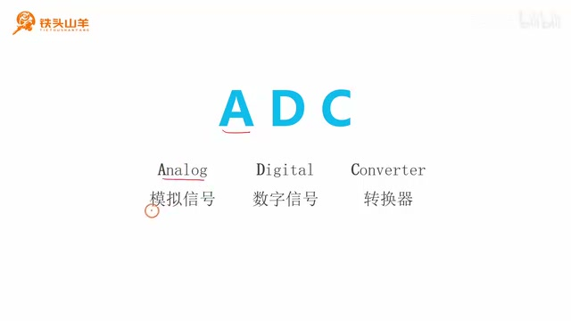
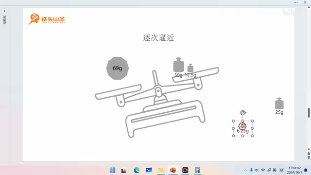
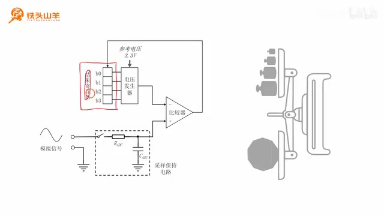
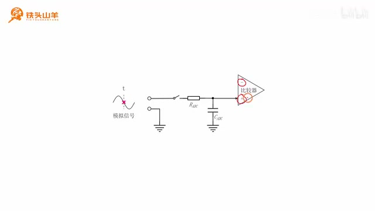
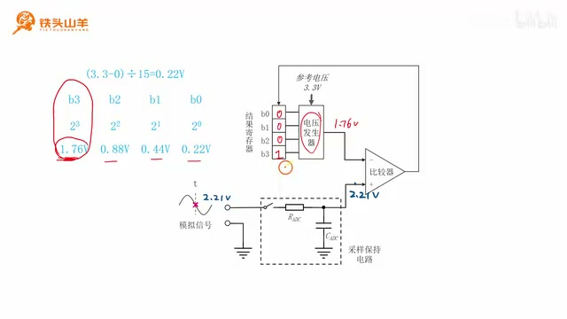

P049 · 10.1 （ADC） 逐次逼近型ADC¶
开始学习 ADC¶
各位同学大家好我是铁头山羊从今天开始呢，我们开始学习新的一章也就是我们的第十章第十章呢我们也是去讲一种新的片上外设，这个片上外设的名字就叫做ADC那么今天让我们通过第10.1节来学习一下逐次逼近型ADC的一个基本的工作原理。首先我们先来看一下本期视频的一个课程安排本期视频呢我们将分成六个部分来讲首先第一部分，既然我们本章要学习的这个模块呢叫做ADC首先呢我们先通过第一部分来了解一下这个ADC到底是什么，然后第二部分呢我们对我们所使用的这颗单片机里的ADC模块呢做一个简单的介绍。第三部分呢我们将介绍一下采样深度的概念然后第四部分我们将对这个逐次逼近型ADC的内部结构做一个简单的介绍，第五部分我们讲一下这个采样保持电路那最后一部分呢我将举一个例子，来让大家看一下这个逐次逼近型ADC它到底是怎么工作的下面呢我们就从第一部分开始。首先来了解一下我们本章要学习的这个ADC它到底是什么要想搞清楚这个ADC是什么，我们不妨从ADC的名字入手。

课件以大字标出 ADC，并将其展开为 Analog（模拟信号）、Digital（数字信号）、Converter（转换器）。 · 原片 01:18 我们来看一下ADC这三个字母呢其中A代表的是analog也就是模拟信号，然后这里的D呢代表的是digital也就是数字信号后边的C表示converter，也就是转换器所以顾名思义我们从它的名字就可以看得出来。这个ADC就是一种将模拟信号转换成数字信号的这么一种转换器那现在呢问题又来了，那到底什么是模拟信号什么是数字信号下面呢我给大家解释一下，这个模拟信号和数字信号的一个概念。
模拟信号：时间与幅度连续¶
首先呢我们先来看这个模拟信号模拟信号一般存在于自然界当中它的特点呢就是在时间上连续，在幅度上也连续那什么是时间连续什么是幅度连续呢，下面呢我给大家举这么一个例子。
我们来看下面的这么一张图这张图呢表示某地一天当中气温随时间变化的这么一条曲线，其中这个横轴呢表示的是时间从当天的0.1直到当天的24点而这个纵轴呢则表示的是温度，它的单位呢是摄氏度首先我们先来解释一下什么是时间上连续所谓这个在时间上连续呢。其实指的是下面的这条曲线呢在任意的时间点都有值比如说我们来看这条曲线啊，这条曲线呢不光在整数的小时上有值比如说早晨的8.9.10点这些位置呢它都有值对吧，而且呢它在这个整数时间点之间呢也是有值的比如说早晨的08:30那它对应的值是不是就在这里啊。然后甚至呢我们是可以是早晨的8.10分那它对应的值就是这里我们还可以进一步的细分，早晨的08:10分的零一秒啊它也是能在这个曲线上找到值的所以呢我们可以看到这条曲线呢，它是在处处时间点上都有值的所以说明这条曲线呢其实是由无数个点组成的我们把这个时在任意时间上都有值的。这个特点呢就叫做时间上连续解释完了什么是时间上连续，我们再来看一下什么是幅度上连续比如说我给大家举一个例子我们来看一下这条曲线上，比如我们来看一下在早晨八点钟的时候它对应的这个点呢在这个位置对吧。那当时对应的这个温度呢正好比19℃要大一点如果我们用这个温度计去测量一下的话，我们可能得到的这个温度呢比如说是19.3℃如果我们使用更精确的温度计去测的话，那么我们测到的可能是19.31℃如果再精确一点呢就是19.312℃。那么这样呢我们可以无限的精确下去对于我们自然界里边的信号呢它的精度呢一般都是无限的，也就是小数点后边呢可能有无限位小数我们把这种无限的精度呢就叫做幅度上连续。
所以呢只要一个信号它满足在时间上连续也满足在幅度上连续我们就可以把这个信号呢称作模拟信号，从这个模拟信号的这个特点上我们可以看出这种信号呢，是很难被我们的计算机或者是单片机所处理的为什么呢。
模拟信号为什么难以直接处理¶
我们来看一下首先因为它在时间上连续所以下面的这条曲线呢，应该是由无限多个点组成的对吧而它在幅度上也连续说明它的精度也是无限的，也就是小数点后我们需要存储无限位而我们这个单片机里边的内存又是有限的。我们怎么去存储无限个点怎么去存储无限精度呢所以这种信号呢，肯定是不能直接被我们的单片机所处理的那怎么办呢其实如果我们想要让单片机去处理这种信号，我们就必须先把这种信号呢给它转换成数字信号这种数字信号。就特别适合应用在我们的计算机或者是单片机当中这个数字信号的特点呢正好跟模拟信号相反，模拟信号的特点是时间上连续幅度上也连续而这个数字信号的特点呢就是时间上离散，幅度上也离散。
数字信号：时间与幅度离散¶
比如说我们来看下面的这么一张图这张图呢是当地的气象站当天呢对这个温度的一个测量值，这张图呢就属于一个典型的数字信号首先呢我们先来看一下什么是时间上离散所谓这个时间上离散呢，就是指这个气象站呢只是在某几个时间点对这个温度进行测量比如说它是每隔两小时测一次这个温度。比如说凌晨的零点测一次两点测一次四点测一次啊，以此类推它只在少数的几个时间点上有值然后所谓幅度上离散呢，就是说他测的这个温度的精度呢是有限的它只保留这个小数点后一位这个就叫做幅度上离散。当这个信号满足时间上离散幅度上也离散这两个特点之后呢我们就把它叫做这个数字信号。
这种数字信号是可以很容易地被我们的单片机所处理的比如说我们写程序的时候，可以用下面的这么两个数组来表示上面这张这么一张图首先第一个数组表示的是这个测量的时间，分别是凌晨的0.2.4.6点十点每隔两个小时测一次然后下面的这个数组呢则表示测量的这个温度。比如说零点测的这个温度呢就是17.1℃也就是这个值，然后两点测得的这个温度呢是17.5℃也就是这么一个值以此类推，可以看到我们在单片机里边可以很轻易的去存储上面的这个图。
ADC 的含义¶
到这里呢大家已经弄清楚什么是模拟信号什么是数字信号了有了模拟信号和数字信号的概念之后，我们就可以定义本章我们要学习的这个ADC了这个ADC，其实就是把自然界里边这种时间和幅度都连续的这个模拟信号给它。转换成右边这种在时间和幅度上都离散的这种数字信号那这其实是一个广义的 ADC的概念，但是具体到我们本章学习的这个ADC模块呢它其实是把自然界里边的这个电压信号注意是电压信号，转换成这种数字量这个就是我们本章要学习的这个狭义的ADC的一个概念。好的经过了刚才的介绍呢我们已经知道什么是ADC了所谓ADC，就是把这种变化的电压信号给它转换成数字量这个就是ADC了解了什么是ADC之后呢，下面我们就通过第二部分来看一下我们单片机里边的这个ADC模块本章我们要学习的这个ADC。其实也是我们单片机里边的一个片上外设。
单片机里的 ADC 模块¶
比如说我们来看这么一张图这个是我们非常熟悉的我们单片机内部的一个结构框图，我们可以在这个结构框图里边找到我们单片机的这个ADC模块比如说在下面的这个位置，我们单片机呢有两个ADC模块分别是ADC1和ADC2。
我们一般在学习的时候呢就只会学习这个ADC1等到我们后边做项目的时候，碰到了这个双ADC我们再来讲一下这个ADC2的一个使用方法我们上课的时候呢只讲这个ADC1，注意我们这两个ADC都是属于12位的逐次逼近型ADC。那什么是12位什么是逐次逼近型呢本节课剩下的任务呢，就是给大家讲清楚这个12位和逐次逼近型这两个名词的一个概念。
采样深度¶
首先呢我们先来看一下这里的这个12位到底是什么意思其实我们刚才所说的这个12位呢，就是指这个ADC的一个采样深度所以下面呢我们就通过第三部分来了解一下这个采样深度的一个概念，那什么是采样深度我们来看这么一张图我们刚才说过呢。这个ADC是Analog-to-Digital Converter也就是模数转换器它的作用呢就是把这个模拟信号，转换成数字信号比如说我们假设我们从左侧输入这么一个模拟信号，然后我们在这个模拟信号上呢取一个点放到这个ADC里边进行转换转换之后。我们得到的这个结果呢肯定是一个数字对吧但是呢在我们的这个单片机里边所有的数字呢都是以二进制的格式去存储的，我们转换的这个结果呢也不例外而我们今天要学习的这个采样深度其实就是用多少位二进制数来表示，这里的这个转换结果比如说我们刚才说我们单片机里边的这个ADC模块呢是12位的逐次逼近型。而ADC这里的12位呢就是指我们需要使用12位二进制数来表示这里的这个转换结果，这个就是采样深度的一个概念那这个采样深度有什么作用呢其实这个采样深度是衡量我们ADC性能的，一个最重要的指标之一比如说我们一般使用的这个ADC都是使用十位或者是12位二进制数。来表示我们的这个转换结果。
如果一些高端的ADC的话会做到14位或者是16位这种14位或者是16位的这个ADC，比这个十位或者12位的这个ADC要贵得多可以看得出来这个采样深度，对于我们ADC的一个重要的意义那这个采样深度具体有什么作用呢下面呢我给大家举一个例子。
四位 ADC 与量化误差¶
比如说这里呢我们有两个ADC一个是四位的ADC另一个是12位的ADC，我们使用这两个ADC同样对这个两伏的电压进行测量我们来看一下，使用这两个ADC测量的结果有什么区别首先我们先来看一下左边的这个四位的ADC刚才我们说过。这个四位表示的就是采样深度所以采样深度就是说我们使用四位二进制数来表示这个采样结果，那采样结果的范围是不是就是从0000～1111也就是二进制的0~~15对吧，然后呢我们假设这个ADC的量程范围是零到3.3伏。所以这个时候呢我们就是使用四个零来表示零伏使用四个幺呢来表示3.3伏，其实我们也就是把这个零到3.3伏的这个电压范围呢给它平均分成了0~~15这么15份，那每一份的电压呢就是(3.3－0)V÷15＝0.22V现在呢。我们就可以去表示这个被测的两伏电压了这个被测的两伏电压如果转换成二进制的话最接近的一个数就是二进制的1001，也就是十进制的九然后我们把这个十进制的九再给它换算成电压的值，我们就是用这个1001去乘以我们刚才算出来这个分辨率0.22伏。我们得到这个结果呢就是1.98伏我们可以看到我们使用ADC 表示出的这个电压跟实际的电压之间还是有差距的，它们两个的误差呢是0.02伏这个0.02伏呢叫做量化误差那为什么会产生这个量化误差呢，就是因为我们在表示这个测量结果的时候这个二进制的位数呢是有限的。
如果我们使用一个无限长度的二进制数去表示这个转换结果的话那么这个量化误差的值呢就会趋近于零。
十二位 ADC 的分辨率¶
那看完了这个四位的ADC之后我们再来看一下右边的这个12位的ADC我们用12位的ADC，对这个两伏的电压进行转换看一下这个转换的误差会不会小一点所谓12位的ADC，就是我们使用12位二进制数去表示这个转换的结果那么转换结果的范围呢。是不是就是从12个0~~12个一呀我们同样假设这个ADC的量程是零到3.3伏，那么12个零是不是就表示零伏啊然后12个一是不是就表示3.3伏啊而这个12个一呢转换成十进制，就是十进制的 4095所以呢我们就是把零到3.3伏的这个电压呢给它平均分成了0~~4095这么4095份。所以它每一份的这个电压呢就是3.3V÷4095约等于0.000806伏，然后现在我们来表示一下这个两伏的一个电压跟这两伏最接近的一个二进制数呢，就是这么一个二进制数然后我们用这个二进制数呢再把它转换成电压我们来看一下这个电压是多少。我们用这个二进制数去乘以刚才算出来的这个分辨率也就是0.000806伏，我们得出的结果呢是1.9997伏我们可以看到这个值呢跟这个两伏之间的误差呢，就变成了0.0003伏也就是0.3毫伏左右比刚才的这个量化误差要小多了。小得多了对吧为什么它的误差会减小呢就是因为我们使用了这个ADC的采样深度，比刚才的要大得多所以呢它的误差就会减小好的，刚才呢我们已经学习了这个采样深度的概念我们单片机里边的这两个ADC是12位的ADC就表示它的采样深度是12位。也就是使用12位二进制数来表示这个测量结果然后在这个12位的后边呢还有一个定语。
逐次逼近型 ADC¶
这个定语呢叫做逐次逼近型下面呢我们再来解释一下这个逐次逼近型ADC所代表的一个含义，所以下面呢我们先通过第四部分对这个逐次逼近型ADC做一个简单的介绍其实我们要学习的这个逐次逼近型，ADC就是ADC的一种类型我们刚才说过这个ADC。其实是一种能够将模拟信号转换成数字信号的一种转换器那要想实现这个模拟信号到数字信号的转换，我们有非常多的方案所以呢就有非常多的这个ADC的类型比如说我们这节课要学习的这个逐次逼近型ADC，也叫做SAR ADC还有闪存型积分型西格玛德尔塔型。流水线型双积分型这些不同的ADC就是采用了不同的方案，实现这个模拟信号到数字信号的一种转换那下面呢我们就来介绍一下这个逐次逼近型的一个基本的工作原理，其实这个逐次逼近型ADC它的工作原理跟我们在生活中使用这个天平称重的这个原理呢基本上是一样的。
用天平理解逐次逼近¶
现在呢我们来想象一下我们有这么一架天平我们想使用这架天平呢对这个重物进行称重，然后跟这个天平配套的右边呢还有这么四个砝码这四个砝码呢最大的这个砝码质量是50克，然后后边的这个砝码呢质量依次减半比如说第二个方法呢质量呢就是50克除以二就是25克。然后第三个砝码的质量呢就是25克再除以二就是12.5克最小的这个砝码的质量呢就是6.25克，我们这几个砝码加起来它的质量呢大概就是不太到100克所以这个天平称重的范围呢，就是零到100克之间然后现在我们想对左边的这个重物进行称重左边这个重物呢它的实际质量是69克。我们现在假装不知道这个质量我们要放到秤上去称现在我们把这个重物放到这个天平上，这个天平是不是就会往左倒啊然后我们把第一个砝码放上去发现这个天平还是往左倒啊对吧，所以呢我们现在就尝试第二个砝码。

逐次逼近的天平示意图比较重物与从大到小逐次加入的砝码。 · 原片 16:30 再把第二个砝码放上去放上第二个砝码之后哎这个天平就往右倒了，说明我们放的这个砝码的质量是不是超重了我们就把第二个砝码给他拿下来然后就变成了啊天平就往左倒了，我们再尝试第三个砝码放上第三个砝码之后这个天平还是往左倒对吧。所以呢我们再试最后一个砝码把最后一个砝码也放上去放上最后一个砝码之后，这个天平呢就接近于水平了然后现在呢我们就可以根据右边的这个砝码来计算一下左边这个重物的一个实际的质量了，那这个质量呢就等于我们算一下啊就等于50克加上12.5克再加上6.25克。就是68.75克这个68.75克是不是就跟这个69克非常接近了，通过这种方式呢我们就把左边的这个重物的质量给他称出来了那这种方式呢我们是这个砝码从大到小，依次去尝试逐渐的去逼近这个被测物体实际质量的一个过程对吧。而我们的这个逐次逼近型ADC也是利用这个原理对我们的电压进行测量的现在呢我们来看一下这个逐次逼近型ADC，的一个内部结构框图。
SAR ADC 的内部结构¶

逐次逼近型 ADC 框图标出结果寄存器、电压发生器、比较器及采样保持电路。 · 原片 18:40 我们来看这张图这张图就是这个逐次逼近型ADC的一个内部结构，首先我们先来看这张图的最左边这个位置这里呢是我们待测的一个模拟信号这个待测的模拟信号，从这个位置输入到我们的这个逐次逼近型 ADC当中这个模拟信号。就类似于我们在使用这个天平称重的时候这个重物然后往里走，这里呢有一个呃叫做采样保持电路的这么一个结构这个采样保持电路呢由这么一个开关，一个电阻还有一个电容组成这个采样保持电路呢。就相当于我们天平里边放重物的这个托盘然后再往里走这里呢有一个比较器，这个比较器呢有两个输入一个正输入一个负输入，这个比较器的作用呢就是对这两个输入信号进行比较。
如果正输入输入的这个电压呢比负输入要大那么这个时候输出的就是一个一否则呢输出的就是零，这个比较器呢就像我们天平里边的这个底座还有这个横杆儿这个底座的作用呢，就是对左右两边的这个重量进行比较而我们这个比较器呢也是对左右两边输入的这个电压进行比较。然后呢我们再来看框图左上角的这个位置左上角的这个位置呢表示结果寄存器顾名思义，这个结果寄存器呢就是用来存储我们ADC转换之后得到的这么一个结果的，我们来看这个结果寄存器呢由这么四位二进制数组成既然它是由四位二进制数组成的。所以呢就说明这个ADC的采样深度等于四那么我们为什么要画一个采样深度等于四位的 ADC 呢，主要呢是因为分析起来方便如果我们要画一个采样深度等于12的ADC的话，一方面呢是我们这个图画不开另一方面呢是我们待会分析的时候呢会变得非常复杂。所以呢我们这里图省事就画了一个采样深度等于四的这么一个ADC然后呢，我们这个结果寄存器由这么四个比特位组成分别是B3到B0其中这个B3呢，就代表我们天平上最大的这个砝码而B0呢就代表这个天平上最小的这个砝码如果我们想向这个天平上去放这个砝码的话。我们就是向对应的这个比特位写一个一就可以了如果我们想把这个砝码取下来呢，就写一个零就可以了然后呢我们继续往右看右边这里呢有一个电压发生器，这个电压发生器的作用呢就是根据我们结果寄存器里边所写的这个值呢去产生对应的电压。然后输出到我们比较器的负输入这一端我们可以把这个电压发生器呢理解成我们天平右侧的这么一个托盘，那经过刚才的分析我们这个逐次逼近型ADC的内部结构是不是就变得非常清晰了，所以下面呢我们再针对这个逐次逼近型ADC的每一部分呢做一个详细的介绍首先呢我们先来看一下下面的这个采样。保持电路的一个工作原理。
采样保持电路¶
所以本期视频的第五部分我们来讲一下这个逐次逼近型 ADC的采样保持电路，接下来我们要讲的这个采样保持电路位于我们框图的这个位置它由一个开关，一个电阻还有一个电容组成刚才呢我们把这个输入的模拟信号。比作我们要称的这个重物那我们现在要学习的这个采样保持电路呢就相当于盛放重物的那么一个托盘，从它的名字上我们可以看得出来这个采样保持电路呢它有两部分的功能一个就是采样，另一个就是保持。
采样与保持的含义¶
我们首先来解释一下这个采样的一个概念我们来看左边的这么一个信号左边这个信号呢，就是我们要测量的这个模拟信号我们测量这个模拟信号的时候呢实际上是从这个模拟信号上取下，当前时刻的这个点然后交给这个ADC进行转换对吧我们转换的是当前时刻的这么一个点。我们从这条曲线上把这个点给它采下来的这个过程呢就叫做采样然后我们再来看一下什么是保持，由于我们这个逐次逼近型 ADC的工作原理呢特别像一架天平对吧所以呢我们在对这个模拟信号的这个点，进行转换的过程中呢我们需要使用这四个比特位不断的进行尝试所以我们尝试这四个比特位呢。就需要消耗一定的时间而在尝试这四个比特位的过程中呢我们希望天平另一端的这个电压呢，不要发生变化所以呢所谓这个保持就是当我们把这个点给它采下来之后呢，我们使用这个电路让这里的这个电压呢保持不变这个就是保持的一个含义。所以呢这就是我们这个采样保持电路的一个作用就是把这个点的电压采下来，然后在转换的过程中呢保持这一点的这个电压呢不变。
电路如何采样并保持¶
现在呢我们就来详细的解释一下这个采样保持电路的一个工作原理首先我们先来看左边的这个位置，左边呢这是我们待测的这个模拟信号这个模拟信号通过这两个点输入到我们的这个采样，保持电路当中由于这个模拟信号它是在不断变化的所以我们第一个任务呢就是使用这个采样。
保持电路从这个模拟信号上把当前的这个点给它取下来就是做一个采样的动作，那怎么进行采样呢我们可以这么做我们把这里的这个开关给它闭合，这个开关闭合之后呢这个模拟信号当前这个点呢。是不是就会通过这个电阻给后边的这个电容充电啊它这个电容充电的速度非常非常的快，马上呢这个电容就充饱了充饱电之后这个电容两端的电压就是从这里到这里的，这个电压是不是就等于模拟信号两端的这个电压啊所以这样呢我们就实现了一个采样的动作。做完了采样这个动作之后呢下一步呢我们就是需要去做这个保持动作了那所谓保持呢，就是要保持电容两端的电压在整个转换的过程中不会发生变化只要电容两端的电压不会发生变化，那这个比较器的正输入端的电压是不是也就不会发生变化了呀那我们怎么实现这个电容两端的电压。保持不变呢其实非常简单。

采样保持电路示意图中，输入开关断开，电容连接比较器输入端。 · 原片 23:20 我们只需要把这个开关给它断开就可以了当我们断开这个开关的时候电容就是不是就没办法通过左边放电了，而我们这个比较器呢它的正负输入端我们学过它都是有这个虚短虚断的一个特点的，所以呢这个电流呢也不可能通过右边给它流出去那电容里边的这个电荷既不可能通过左边放电。也不可能通过右边放电那这个电荷是不是就一直存储在这个电容里边了，一直存储在这个电容里面这个电容里面的电压呢就会保持不变对吧所以呢这样呢我们就实现了一个保持的效果。
采样保持的两个阶段¶
我们总结一下我们这个采样保持电路呢他的工作分成两个阶段，一个是采样阶段一个是保持阶段那在采样阶段的时候呢，我们闭合这里的开关那我们就可以对这个模拟信号的这个点呢进行采样。其实呢也是就是对这个电容进行充电我们会看到这个电容两端的电压呢逐渐变大一直到接近于这个模拟信号这一点的电压为止，然后第二个阶段呢就是保持阶段在保持阶段呢我们把这个开关给它断开，断开开这个开关之后呢由于这个电容没办法向外放电对吧。
所以呢它两端的这个电压会保持不变这个就是采样保持电路工作的这么两个阶段讲完了这个采样保持电路之后，接下来呢我们就可以从整体上对这个逐次逼近型 ADC的工作原理做一个理解了。
四位 ADC 转换 2.21V¶
所以最后一部分呢我们来举一个例子来看一下这个逐次逼近型ADC是如何把这个模拟信号，转换成数字信号了比如说我给大家举这么一个例子。

四位 ADC 算例按 B3 到 B0 试探，权重依次为 1.76V、0.88V、0.44V、0.22V，并与 2.21V 输入比较。 · 原片 27:20 我们使用这么一个四位的逐次逼近型ADC对这么一个模拟信号进行转换我们假设当前的时间呢是T，当前时间T对应的这个电压呢是这么一个点这一点的电压实际的电压呢是2.21伏，我们把这个2.21伏输入到这个ADC当中进行转换转换的结果呢我们保存在这个结果寄存器当中。我们来看一下这个转换的过程首先我们先闭合下面的这个开关也就是采样保持电路，这里的这个开关让这里的这个2.21伏的输入电压呢通过这个电阻给下面的这个电容充电，充满电之后这个电容两端的电压是不是就是2.21伏了然后我们再断开这里的开关。那电容两端的电压就会保持不变那电容两端的电压其实就是比较器正端的这个输入电压，这里呢也就是2.21伏。
结果寄存器与砝码权重¶
然后我们再来看框图的上面的这一部分我们来看一下这里的这个结果寄存器啊之前我们讲了这个结果，寄存器这四个比特位呢就相当于天平上的四个砝码对吧，其中呢这里的这个B3代表最大的那个砝码B0呢代表最小的那个砝码所以现在呢我们就来看一下这B3到B0。这几个砝码代表的权重都是多少首先因为我们使用的这个ADC它是一个四位的ADC采样深度等于四，所以采样深度等于四呢就表示它是使用四位二进制数来表示这个零到3.3伏的，那么四个零是不是就表示零伏啊那四个幺就表示3.3伏四个零呢就是零。四个幺呢就是15所以呢我们是把这个零到3.3伏。
这一段电压呢给它平均分成了15份那么每一份所代表的电压呢就是0.22V，这个0.22V呢，就是这个逐次逼近型ADC的分辨率然后我们最小的这个砝码B0的这个权重就等于这个分辨率，也就是0.22伏然后B1这个砝码呢正好比他大一倍就是0.44伏。B2呢又比B1大一倍就是0.88伏然后B3呢比B2大一倍，就是1.76伏这就是这几个砝码所代表的一个权重。
逐位试探并得到结果¶
好的到这里呢我们所有的准备工作都已经做完了下面呢我们就使用这个ADC，对我们的这个模拟信号进行测量那怎么测量呢首先我们先向B3到B0，这些比特位呢都写零写零之后经过这个电压转换器的转换就是0+0加0+0啊。加四个零对吧它的结果呢就是零伏这个时候我们先尝试第一个砝码，就是B3这个砝码B3这个这时我们像B3这个位置写一个一那转换的结果是不是就是B3的这个值，也就是1.76伏啊那这个1.76伏比2.21伏要小所以我们这个一呢就保留下来。我们再试B2这个砝码我们向B2写一个1B2这个砝码代表的值呢是0.88伏，所以经过电压转换器转换之后他得到的这个值呢就是1.76伏加0.8八伏加零伏加零伏，也是这两个值相加我们算一下这个值是多少啊就是2.64伏。这个2.64伏比2.21伏要大对吧所以呢我们这个一就不能留着它了我们把它换成零，然后我们再尝试这个B1我们像B1写一个一像B1写一之后呢，这个值就等于这里的1.76伏加上0.44伏对吧等于2.20伏。这个2.20伏呢比这里的2.21伏要小这里是2.20比这个2.21伏要小，所以我们这里的B1的这个一呢就被保留了下来。
我们再来看一下最后一个比特位也就是B0这个比特位B0，这个比特位的权重呢是0.22伏我们在刚才的这个2.20伏的基础上呢再给它加上一个0.22伏，得到的结果呢就是2.42伏这个2.42呢超过了这个2.21了对吧所以呢这里的这个B0的这个一呢。我们也不能留也给他写一个零这样呢我们得到的转换结果就是1010，这个1010就是我们把模拟信号转换成数字信号的一个值那这就是我们最终的一个结果，好的到此为止呢本期视频的所有内容就都讲完了相信通过本节课的学习。大家已经对什么是逐次逼近型ADC有了一个非常清晰的认识好的本节课的内容就到这里，我是铁头山羊感谢大家的收看让我们下期视频再见。